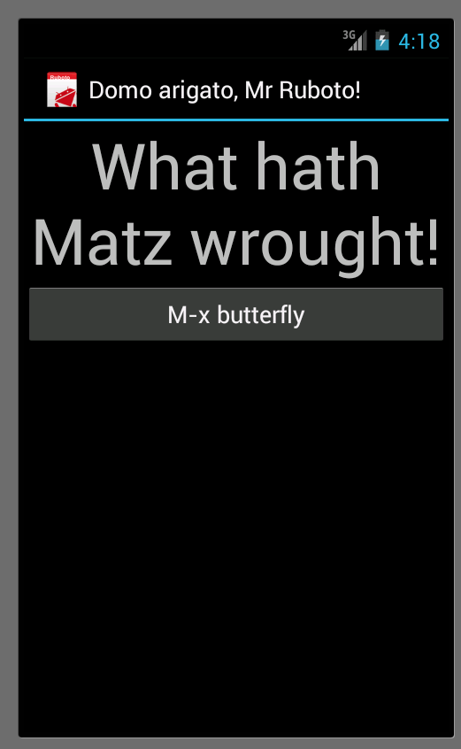

Android + Ruby => Ruboto
RedSnake Philly, Feb. 15, 2013

| z, ? | toggle help (this) |
| space, → | next slide |
| shift-space, ← | previous slide |
| d | toggle debug mode |
| ## <ret> | go to slide # |
| c, t | table of contents (vi) |
| f | toggle footer |
| r | reload slides |
| n | toggle notes |
| p | run preshow |
| P | toggle pause |

// JDK classes
import java.util.ArrayList;
// Android API
import android.app.Activity;
import android.content.Context;
import android.os.Bundle;
import android.support.v4.view.ViewPager; // Local code
public class ActionBarTabsPager extends Activity {
ViewPager mViewPager;
TabsAdapter mTabsAdapter;
@Override
// Callback
protected void onCreate(Bundle savedInstanceState) {
super.onCreate(savedInstanceState);
mViewPager = new ViewPager(this);
mViewPager.setId(R.id.pager);
setContentView(mViewPager);
}
}
i = java.lang.Integer::MAX_VALUE
# 2147483647
a = java.util.ArrayList.new
# #<Java::JavaUtil::ArrayList:0x111bda67>
a << "1"
# #<Java::JavaUtil::ArrayList:0x111bda67>
a << 2
# #<Java::JavaUtil::ArrayList:0x111bda67>
a.map(&:to_i).reduce(&:+)
# 3
require 'path/to/mycode.jar'
$ ruboto gen app \
--package org.ruboto.example.quick_start \
--target=android-17
<manifest package='org.ruboto.example.quick_start'>
<application android:hardwareAccelerated='true'
android:icon='@drawable/ic_launcher'
android:label='@string/app_name'>
<activity android:label='@string/app_name'
android:name='QuickStartActivity'>
<intent-filter>
<action android:name='android.intent.action.MAIN'/>
<category android:name='android.intent.category.LAUNCHER'/>
</intent-filter>
</activity>
<activity android:name='org.ruboto.RubotoActivity'/>
<activity android:name='org.ruboto.RubotoDialog'/>
<service android:name='org.ruboto.RubotoService'/>
</application>
<uses-sdk android:targetSdkVersion='17'/>
</manifest>package org.ruboto.example.quick_start;
import android.os.Bundle;
public class QuickStartActivity
extends org.ruboto.EntryPointActivity {
public void onCreate(Bundle bundle) {
getScriptInfo().setRubyClassName(
getClass().getSimpleName());
super.onCreate(bundle);
}
}require 'ruboto/widget'
require 'ruboto/util/toast'
ruboto_import_widgets :Button, :LinearLayout, :TextView
class QuickStartActivity
def on_create(bundle)
super
set_title 'Domo arigato, Mr Ruboto!'
self.content_view =
linear_layout(:orientation => :vertical) {
@text_view = text_view
:text => 'What hath Matz wrought?'
button :text => 'M-x butterfly',
:on_click_listener => proc { butterfly }
}
end
def butterfly
@text_view.text = 'What hath Matz wrought!'
toast 'Flipped a bit via butterfly'
end
end
activity Java::org.ruboto.example.quick_start.QuickStartActivity
setup do |activity|
start = Time.now
loop do
@text_view = activity.findViewById(42)
break if @text_view || (Time.now - start > 60)
sleep 1
end
assert @text_view
end
test('initial setup') do |activity|
assert_equal "What hath Matz wrought?", @text_view.text
end
test('button changes text') do |activity|
button = activity.findViewById(43)
button.performClick
assert_equal "What hath Matz wrought!", @text_view.text
end$ rake install start
$ rake update_scripts